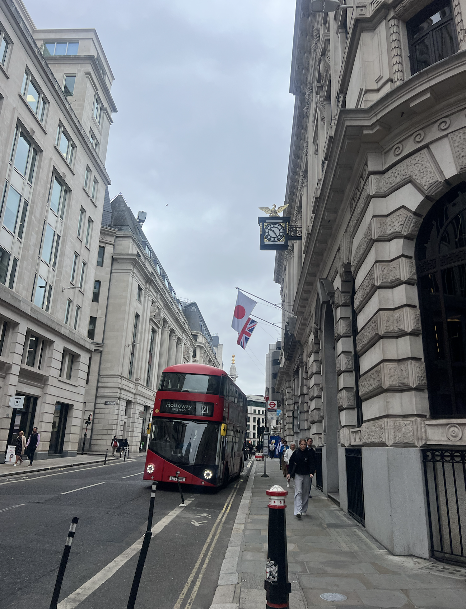

Sorry guys, it's been a minute.
Here's a long overdue blog post about the 3 days that I have spent in London.
My flight arrived at the Heathrow airport at 6:30 am. It was the first time that I had a full 8 hours of sleep on a flight, which I was proud of. As soon as I got my luggage back, I got to my hotel.
It was still pretty early, so I decided to take a walk around the city. It was surprisingly cold, and I pretty much packed only summer clothes. I was still wearing the sweater and denim shorts that I slept in on the plane, except the sweater was open-knit, so it didn't do much to keep me warm. I noticed that London had a distinct European feel to it, it didn't have the high-rise skyscrapers that I was so used to seeing in Chicago. Instead, I saw a lot more historic architecture. Later, I stopped at a cafe, picking up an oat milk cappuccino.
Later that day, I got tickets for the Tower of London. That was when it started raining. I noticed that British rain is lighter, but more frequent, than American rain (at least where I come from, in Chicago). Being a major tourist attraction, the line was quite long - but moved surprisingly fast. I noticed that, where there used to be a moat, there was now a field of flowers. As I walked in, I learned that this place used to be a prison that held famous, well-known criminals. It felt very authentic and medieval, with narrow, spiraling stairs and glass mosaics. After touring the castle, I headed over to the Crown Jewels, which was a pretty long wait in the rain, so that was fun. But it was worth it, I'd say. I saw a the world-famous crown jewels as well as other royal regalia while walking through its halls. Unfortunately, I wasn't allowed to take pictures, but yeah, it was really impressive.
I spent the afternoon at Tate Modern, a modern art museum that was just a few minutes away from my hotel. While walking through the exhibits, I noticed that a lot of these works served as commentary on our society. For example, Babel (2001) by Cildo Meirles was named after the biblical Tower of Babel, which caused the builders to speak different languages and started all the world's conflicts. It consists of radios from varying time periods, which shows how drastically radio communication has evolved over time. Another one that stood out to me was a series of photographs by Hans Haacke (1971), which show the locations of buildings owned by a real estate firm engaged in unethical practices. It served as a commentary on how corruption and injustice play a role in large societal systems. And my personal favorite exhibit was an interactive one where I could lie down and watch a video about a girl becoming one with nature (snippet below).
Still jet lagged, I woke up quite early. Trying to overcome the tiredness, I grabbed coffee. It was still barely 8, and the British Museum opened at 10. So I decided to walk around the Big Ben, and of course take some pictures. My toxic trait is that I will take pictures of literally anything. And yeah, it was scenic. After all, it is the Big Ben, which is another famous tourist attraction.
It was still pretty early, so I walked around Trafalgar Square until the British Museum opened. I find it really interesting how museums in the UK (and other parts of Europe as well) are free, but museums in America are (usually) not. I saw a wide variety of artifacts from many different cultures and time periods, such as ancient Egyptian tombs, ancient Greek and Roman sculptures, ancient Chinese pottery (yay motherland!), and even jewelry. I also had an opportunity to see the exhibit dedicated to the Age of Enlightenment from many different perspectives, rather than the European one that we are used to seeing. Overall, visiting this museum had opened my mind and allowed me to explore different time periods and cultures.

Last full day in London :(
Since the jet lag was still hitting, I woke up early. I got coffee and breakfast, you know the drill. After that, I explored the streets of London again, until the National Gallery opened. It was really nice, and I got to see historical art from some of the most famous painters, such as Van Gogh and Monet. I also had to get pictures of the interior architecture since it was absolutely breathtaking.
After that, I went to Chinatown and got Korean noodles. I later spent my afternoon exploring different neighborhoods of London with a friend, such as Soho and Covent Garden.

Ok that's all bye!